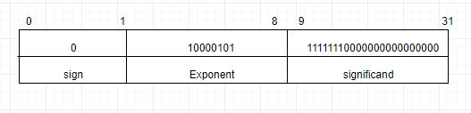
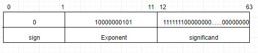

Express (127.125)10 in the IEEE single precision standard of floating point representation
Single precision
Convert decimal to binary :
first convert 127 in to binary format.
127=1111111
then convert .125 in to binary. for that,
0.125*2 =0.250 -->0 ^
0.250*2 =0.500 -->0 |
0.500*2 =1.000 -->1 |
0.125 = 100
Binary format of 127.125=1111111.100
Normalize the binary fractional number :
1.111111100 X 2^6
(mantissa= 111111100)
Calculate Exponent :
E=127+6=133
Convert Exponent into binary :
(133)10 = (10000101)2
Exponent=10000101
Representation:

Binary result (32 bits): 01000010111111110000000000000000
Double precision
first convert 127 in to binary format.
127=1111111
then convert .125 in to binary. for that,
0.125*2 =0.250 -->0 ^
0.250*2 =0.500 -->0 |
0.500*2 =1.000 -->1 |
0.125 = 100
Binary format of 127.125=1111111.100
Normalize the binary fractional number :
1.111111100 * 2^6
Calculate Exponent :
E=1023+6=1029
Convert Exponent into binary :
(1029)10 = (10000000101)2
Exponent=10000000101
Representation:

Binary result (32 bits):0100000001011111111000000000000000000000000000000000000000000000